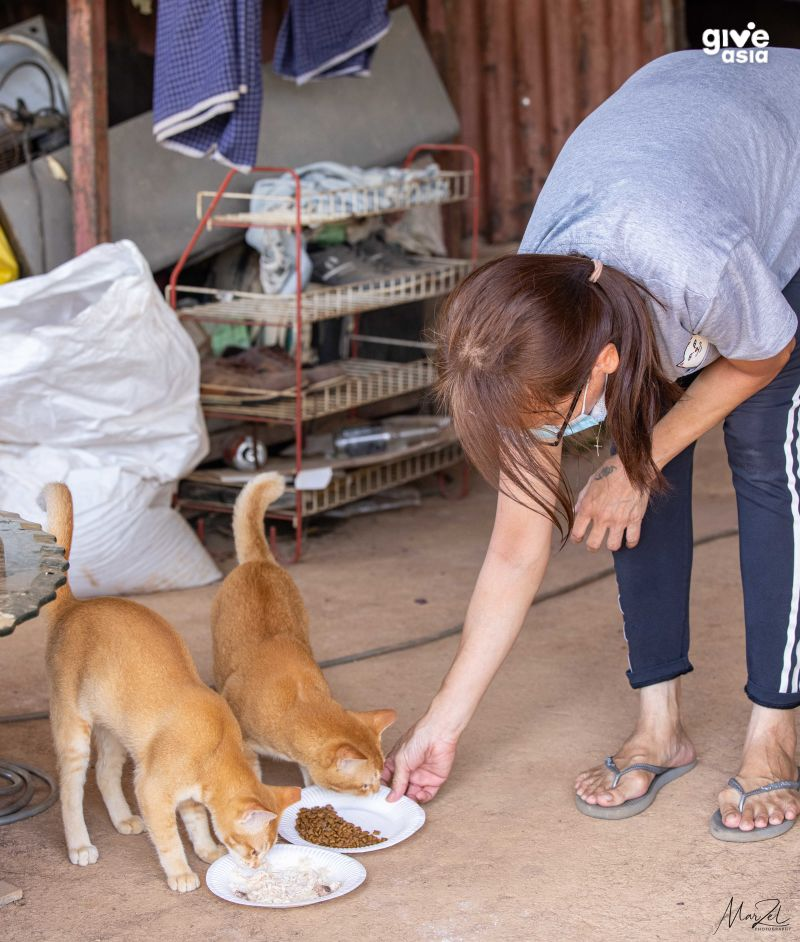
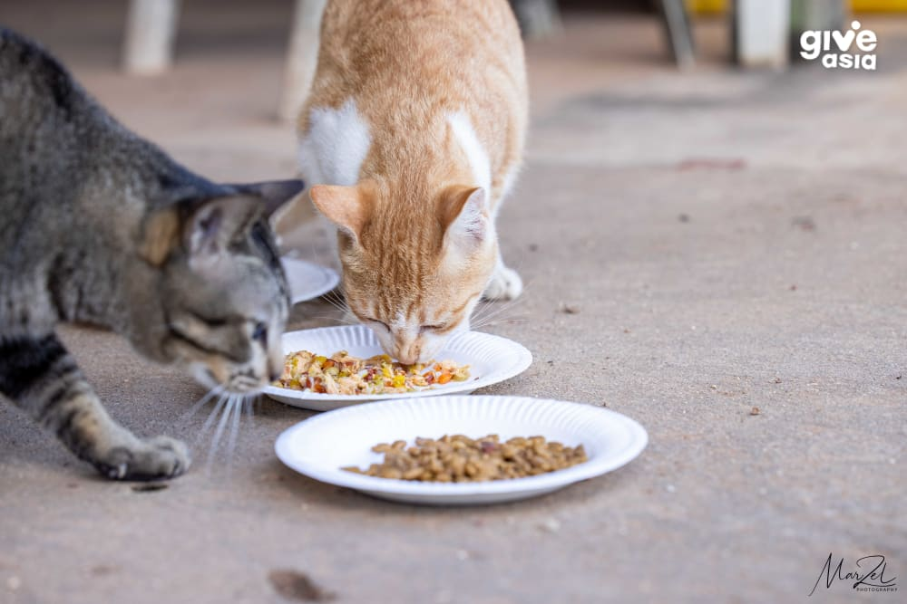
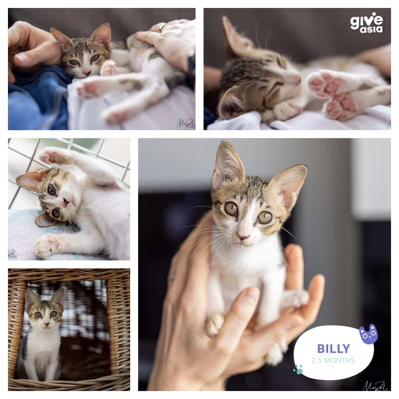

Save the Strays Campaign
This program focused on rescuing and providing shelter to stray animals in the urban areas. Over 500 animals were successfully rehomed. This program focused on rescuing and providing shelter to stray animals in the urban areas. Over 500 animals were successfully rehomed. This program focused on rescuing and providing shelter to stray animals in the urban areas. Over 500 animals were successfully rehomed. This program focused on rescuing and providing shelter to stray animals in the urban areas. Over 500 animals were successfully rehomed.
Date: 2023-05-10

Animal Health Camp
Upcoming health camp for domestic animals in rural areas, providing free veterinary services and education on animal care. Upcoming health camp for domestic animals in rural areas, providing free veterinary services and education on animal care. Upcoming health camp for domestic animals in rural areas, providing free veterinary services and education on animal care. Upcoming health camp for domestic animals in rural areas, providing free veterinary services and education on animal care.
Date: 2022-11-22

Cat Assisted Therapy
It’s a therapeutic place where visitors can play with cats, play with the animals and enjoy relaxing music!
Date: 2022-05-02